Your own place to hang out
Everything you'd expect from a chat app, built as a fast native Windows app with a look of its own.
Servers & channels
Text and voice channels in categories, roles with permissions, and custom emoji — even in channel names.
Voice, video & screen share
Hop into a voice channel, turn on your camera, or Go Live and share your screen with the whole channel.
Friends & DMs
Add people by their tag, like Jeay#1. Message friends, call them straight from a DM, or send yourself notes.
Klips
A feed of the videos your community posts, one at a time, with likes, and mods can pin or remove posts.
Emoji & GIFs
Your servers' own emoji, the full emoji set, and GIF search, one click from the message box.
Make it yours
22 themes, glass you can dial up or down, fonts, a sound for everything, and your own picture and banner.
Choose your team
Six crews, each with a server of its own. Pick one when you sign up and you're straight in, with your team's emblem on your profile and next to your name.
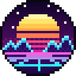
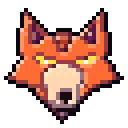
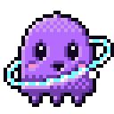
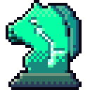
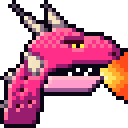
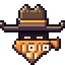
- Switch teams once a week
- Every team gets voice rooms and its own channels
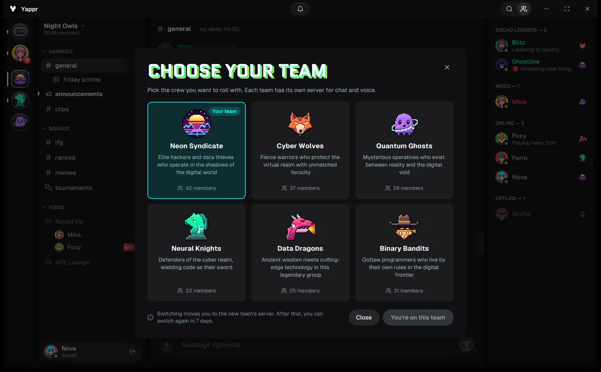
Rally the squad
Call the squad together, share the clip from last night right in the chat, and react to every clutch.
- Videos play in place, no download first
- Replies, forwards and pins
- Folders to keep your servers tidy
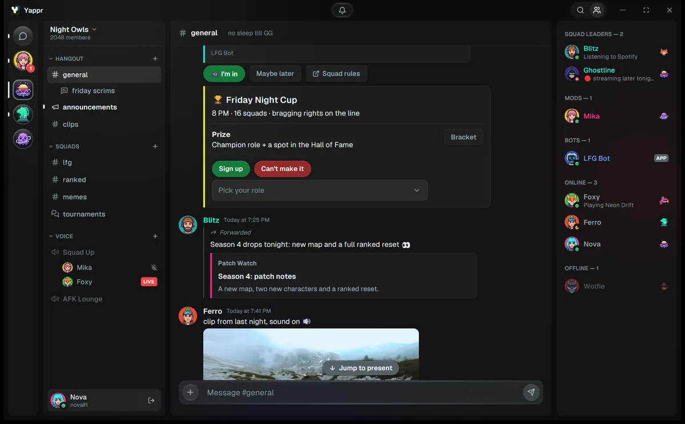
Go Live together
Jump into a voice channel and talk. Share your screen or a single game window, watch several streams side by side, or pop one out into its own window.
- Voice channels in every server
- Camera and screen share in the same call
- Calls straight from a DM
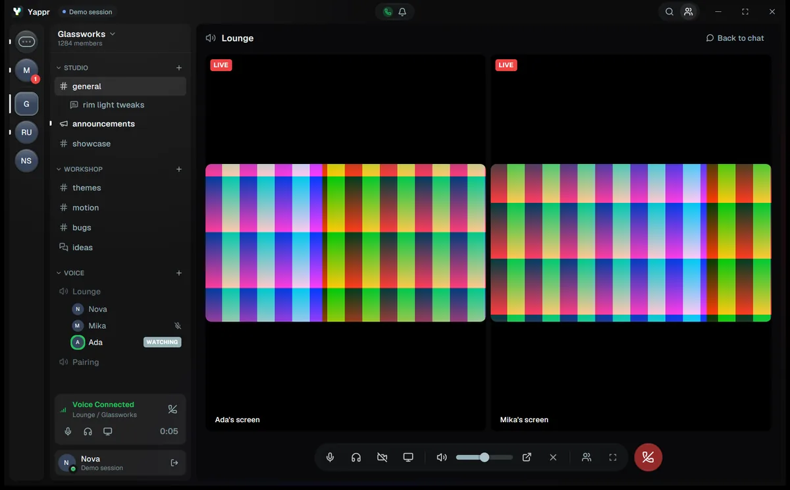
Your way
See-through panels, soft light and a material that lights up under your cursor. Pick from 22 themes, from frosted glass to pure OLED black.
- Adjust how much glass you want
- Your choice of font and motion
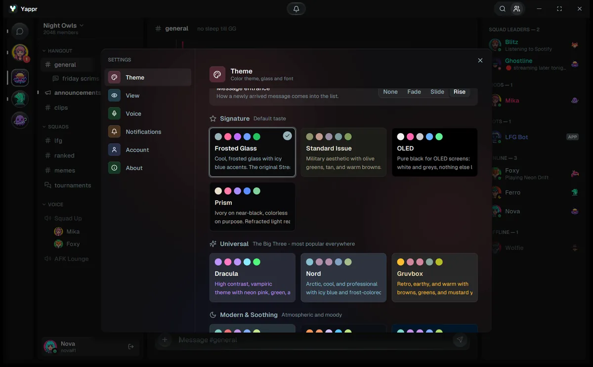
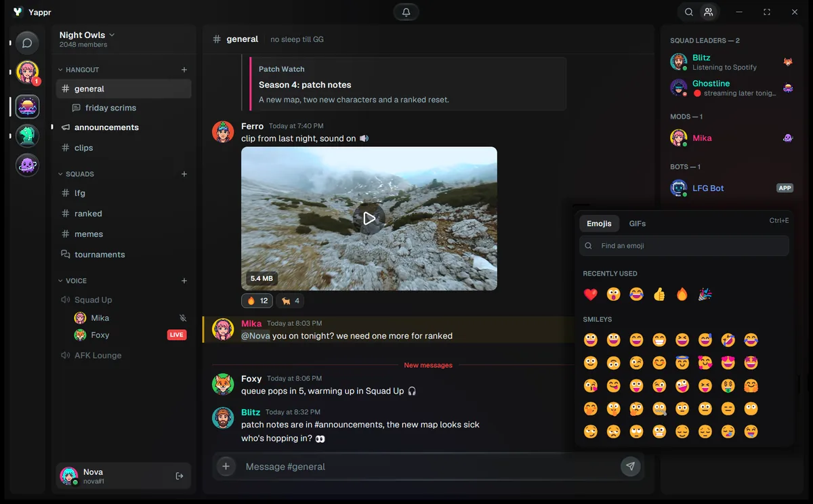
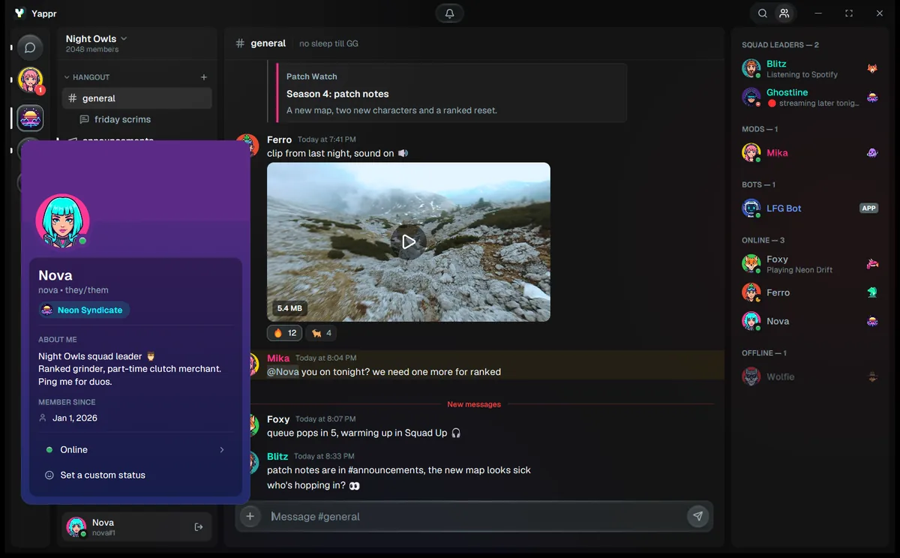
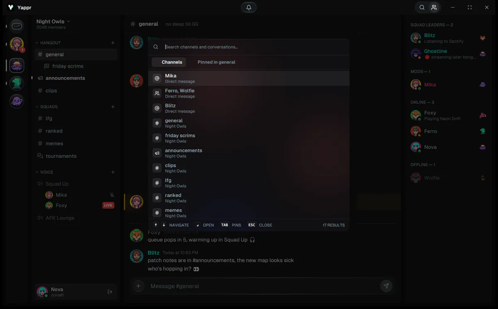
Fits however you play
Shrink it beside your game, stretch it across a second screen, or give it a whole new look in a click.
Up and running in a minute
Download
Grab Yappr.zip.
Unzip
Put the folder anywhere you like — your Desktop, Documents or a Games folder.
Open Yappr.exe
No installer, nothing extra to download.
Sign up
Make an account with your email. You land in the community server and pick your team.
Always up to date
New versions download in the background and start the next time you open Yappr. Every update is checked against Yappr's digital signature before it installs.
Your account, anywhere
Everything lives on the Yappr server, not your PC, so you can sign in from any computer.
Free for Windows 10 and 11.
Download Yappr